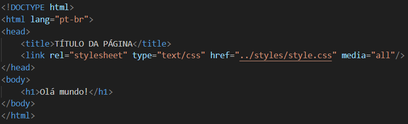

CSS Básico
CSS é a sigla para Cascading Style Sheets, que, em português, significa Folhas de
Estilo em Cascata. Essa linguagem de estilo é acessível e compreensível, sendo
facilmente aplicada em conjunto com as linguagens de marcação HTML ou XHTML. Existem
três formas para aplicar o CSS em nosso projeto WEB:
CSS Online com Atributo Style:
Aplique estilos diretamente em um elemento HTML usando o atributo style, inserindo as propriedades
de estilo no próprio elemento. É adequado para estilos simples ou específicos.
CSS como Arquivo Externo com Elemento Link:
Armazene estilos em um arquivo CSS e referencie-o no HTML usando o elemento link. Promove a
modularidade e reutilização de estilos em várias páginas.
CSS no HTML com Elemento Style Embutido:
Incorpore estilos no HTML usando o elemento style. Útil para estilos específicos, mas pode ser
menos prático em projetos maiores ou com estilos compartilhados.
O uso mais popular do CSS é o CSS como Arquivo Externo com Elemento Link, é o
que eu uso também.
Dentro do "<head>" do seu documento você vai usar o elemento "<link>" para
chamar sua folha CSS, para visualizar.

Normalmente se usa como "padrão" o nome "style.css" para a folha de CSS.